Chores first, then screens.
A free family app where kids do their chores, parents approve them, and the home internet only switches on once the chores are done. It runs on a small computer in your home — your family's data stays in your house.

How it works
Three simple steps, every day.
Kids get chores
Each morning, your kids see their list of chores for the day. Chores earn points, and points unlock rewards and extra screen time.

Kids submit chores for approval
When a chore is done, your kid taps "Done" and can add a photo as proof. Then they wait for you to review it.
Parents approve and internet comes back
You review the chores in the app ("Needs you" screen) and approve or send back. Once approved, your kid's internet is back on immediately.

What kids see
A simple, motivating interface.
Today's chores

Each chore shows how many points it's worth and whether a photo is needed. Tap a chore to see the steps.
Levels and rewards

Points add up to levels. Unlock badges, special flair, and spend points on rewards — like extra screen time or games.
What parents see
Everything you need in one place.
Today screen

See every kid's chores at a glance. Approve them one by one, or pause to remind a kid to do better.
Needs you

One focused screen for everything waiting: chores to approve, screen time requests, reward redemptions, and chat messages.
Is it right for my family?
t@sk4ce works best when you want chores tied to internet access.
What it does well
- Kids who are old enough to understand cause and effect (usually 8+).
- Families with home internet and an always-on computer (a Raspberry Pi, a laptop, even a spare phone on WiFi).
- Parents who can check the app once a day or more.
- Kids who want something to work toward (points, levels, rewards).
Be honest about the limits
t@sk4ce is not a fortress. A determined kid can get around it (a phone hotspot, changing network settings, even plugging in a computer to another network). The app watches for these workarounds and tells you when they happen — that's when you talk to your kid about trust. If the home box is off, the internet just works (we fail open, not locked).
This is not a spyware app. We don't track websites, screen time, location, or keystrokes. The app is here to enforce chores, not surveil your family. Chore completion, points, levels, and badges are the only data we see.
Set it up in 20 minutes
Five straightforward steps.
Copy the one-line installer
Click the button to copy this command. Then paste it into your computer's terminal.
The installer needs Linux (Raspberry Pi OS, Ubuntu, Debian) and will ask before installing Docker if you don't have it.
Let the installer run
It will download t@sk4ce, ask a few questions, and start the app. Wait for it to finish (usually 2–3 minutes).
The app runs in the background. Your data stays on your computer the whole time.
Open the app on your phone or computer
Once the installer is done, open a web browser and go to the IP address it gave you. The app will show you a setup wizard.
Add your family and kids
Create a parent account, then add your children and choose which devices they use.
Create a chore and go
Make a chore, give it to your kids, and you're ready. The app handles the rest.
Privacy
Your family's data belongs to you.
Stays in your home
t@sk4ce runs on a computer in your house. Your chores, kids, points, chat, and photos never leave your network.
No accounts with us
We don't have a server. No sign-up, no username, no password saved anywhere but on your box. You own your data entirely.
No ads or trackers
t@sk4ce is free and open-source. We don't sell your data, show ads, or track anything. Ever.
GIFs are optional
Kids can use GIFs in chat, but only if you turn it on. GIFs come from GIPHY through your home box — we never pass along who's sending them.
Frequently asked questions
What computer do I need?
Any always-on Linux machine: a Raspberry Pi 4 or 5, an old laptop, a NAS, or even a spare laptop running Ubuntu. It needs to be plugged in and connected to your home network 24/7 (or at least during the hours kids use internet). Details in What you need.
Do I need a special router?
No. t@sk4ce works with any home router. We've tested with common models (TP-Link, Netgear, Eero, Asus, UniFi). If you have a mesh network, pick one of the main routers. See the full router compatibility list.
What if my internet goes down?
If your home internet is down, t@sk4ce still runs locally — parents and kids can chat and plan chores. Chores can't be marked done until the internet comes back (the app needs to tell the blocker to let them online). This is by design: no internet, no rewarding (and no blocking).
Can I use it with devices outside my home?
t@sk4ce is designed for devices on your home network. If your kid has a phone that sometimes connects to the home WiFi and sometimes doesn't, the app will block when they're home and let them through when they're away. Remote access (VPN to your home network) is planned but not yet built.
What if a kid finds a workaround?
t@sk4ce watches for common workarounds (phone hotspots, trying to connect to other networks). If it detects one, it flags that device as "resisting" and sends you a notification. That's your signal to talk to your kid about trust and boundaries. The app doesn't spy or lock down further — that's between you and them.
Where's the manual / troubleshooting?
The full guide is here. Problems? Check Troubleshooting.
Is this open source?
Yes! t@sk4ce is licensed under GPL-3.0. The code is on GitHub. You can review it, modify it, and learn how it works.
For technical folks and contributors:
Architecture & engineering →